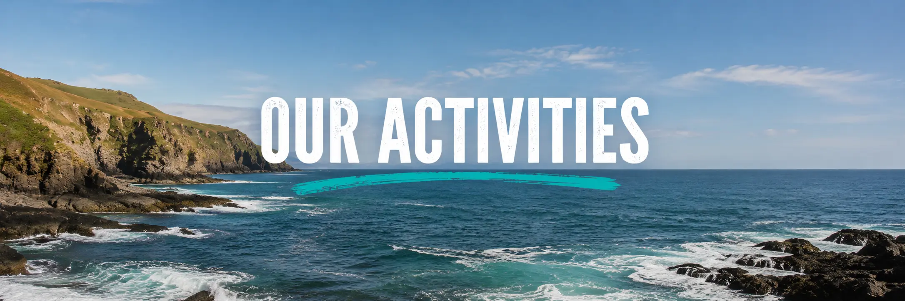
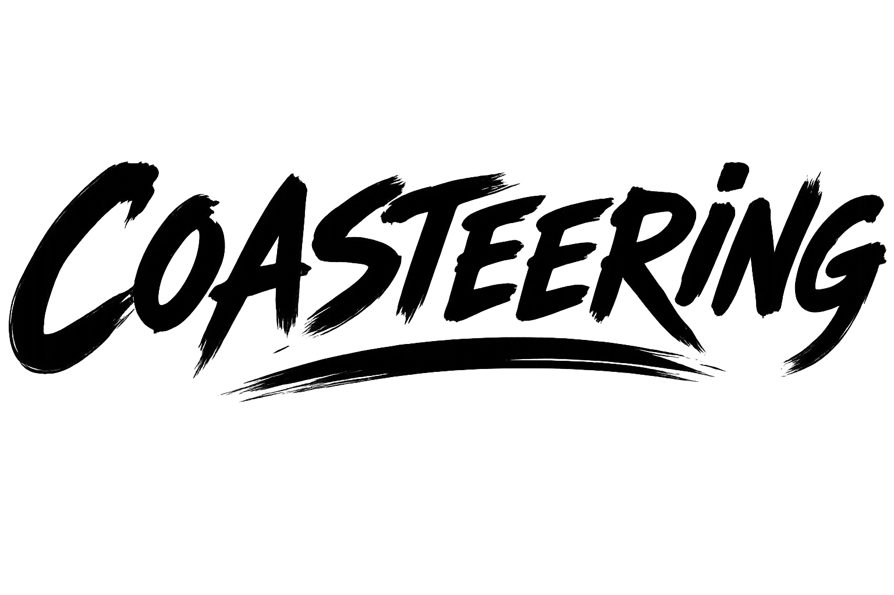
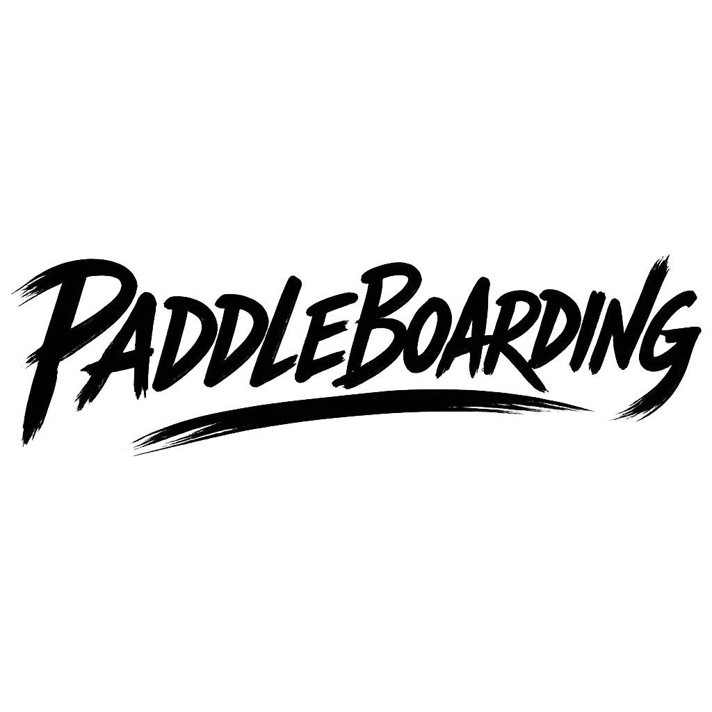

Coasteering is an exciting way to explore the coastline, combining cliff jumping, open-water swimming and sea cave exploration into one unforgettable adventure. Jump from natural rock ledges, swim through clear coastal waters, and discover hidden caves and rocky passages while guided safely along the stunning West Wales shoreline.
Sea kayaking offers a fantastic way to explore the West Wales coastline, paddling through sheltered bays, hidden sea caves and dramatic cliffs while taking in breathtaking scenery. Along the way, you may spot seals, seabirds, dolphins and other local wildlife, making every trip a unique coastal adventure.

Paddleboarding is a relaxing and enjoyable way to experience the West Wales coastline, gliding across calm waters while taking in the beautiful scenery. Perfect for families, beginners and anyone looking for a gentler adventure, paddleboarding is easy to learn and a great way to build confidence on the water.
At Antur, we provide all the specialist equipment you need for a safe and enjoyable adventure, including wetsuits, buoyancy aids, helmets and activity-specific gear. Our experienced and fully qualified instructors are passionate about the outdoors and are dedicated to helping you get the most from your experience, whether you're a complete beginner or a confident adventurer.
Before every session, we carry out thorough weather and sea condition checks to ensure activities can be enjoyed safely. Throughout your adventure, our guides provide expert instruction, safety briefings and ongoing support, giving you the confidence to explore the stunning West Wales coastline with peace of mind.